01 / Controls · Hardware · M.Sc. thesis
Planar CubeSat
A planar satellite testbed and digital twin using model predictive control. I designed the platform, developed the control system, and built custom measurement hardware to resolve differences between simulation and physical behavior.

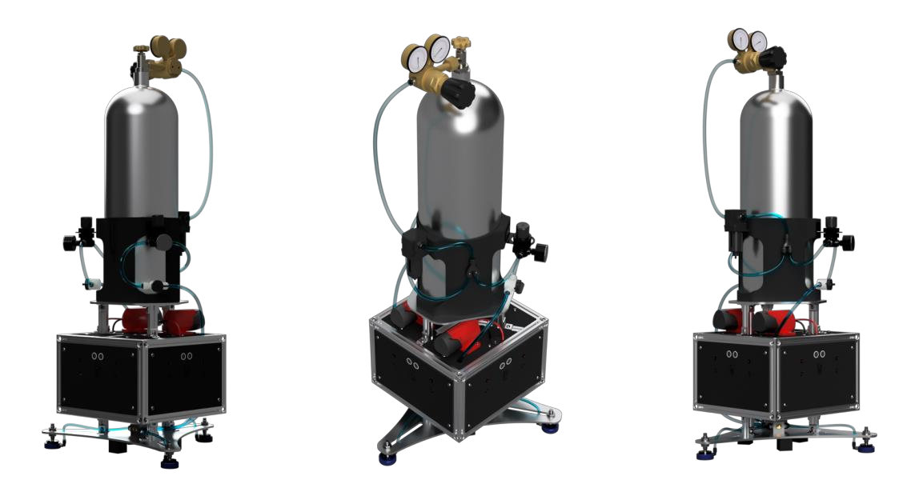

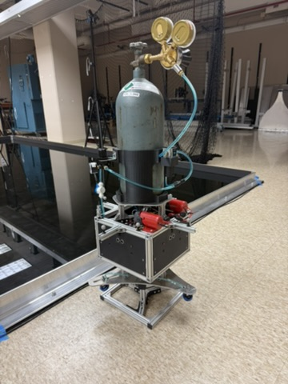
On physical hardware · documented profile-following experiment
- Final position error
- 2.4 cm
- Final heading error
- 0.51°
- Control update rate
- 16.7 Hz
Project overview
Small spacecraft have limited propellant and actuators that cannot always deliver a continuously adjustable force. This project investigates whether model predictive control (MPC) can make useful decisions in real time when every thruster is simply on or off—and whether a calibrated simulation can reproduce the physical system’s behavior.
The testbed moves across a 6 × 6 meter epoxy floor on three air bearings. It can translate in two directions and rotate about its vertical axis, giving a low-friction setting for studying planar satellite motion.
My work connected the full experiment: the mechanical platform and pneumatic system, actuator characterization, embedded command interface, controller, simulation, and comparison of recorded results.
Digital twin validation
The most difficult part of the project was identifying the sources of mismatch between the digital twin and the physical hardware. I needed measurements of the actual system’s output to determine where the model was inaccurate.
I addressed this by designing and building custom measurement hardware, including a thrust test bench to characterize each thruster individually. These measurements provided the data needed to calibrate the digital twin against the physical platform.
From CAD to physical hardware
The physical build brings the CAD assemblies together: an aluminum chassis with printed panels, onboard electronics and batteries, pneumatic tubing, and an adjustable air-bearing base. The bench photographs show the cylinder holder without the air cylinder installed, making the supporting structure and component arrangement easier to see.
With the cylinder and regulators fitted, the platform carries its own air supply beside the test floor. These photographs show the hardware used to connect the mechanical design, actuator measurements, and control experiments described below.

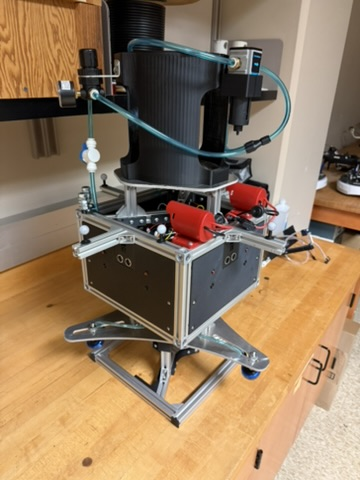

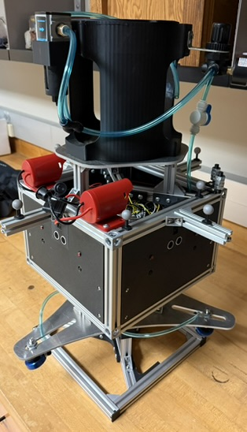
Mechanical design
I designed the platform around a 290 × 290 × 150 mm frame built from 2020 aluminum extrusion. Corner brackets and T-nuts hold the structure together, while 3D-printed PLA decks, side panels, and mounting parts make the internal layout easy to revise.
The square layout puts two thrusters on each face. Their offset mounting positions let the controller combine translation and yaw: firing a pair primarily produces translation, while using one side of the pair also creates torque. Eight binary actuators give 256 possible firing combinations at each control step.
The complete moving testbed includes the air supply and bearing assembly. Its measured mass was 23.090 kg; the smaller frame dimensions describe the central satellite platform.

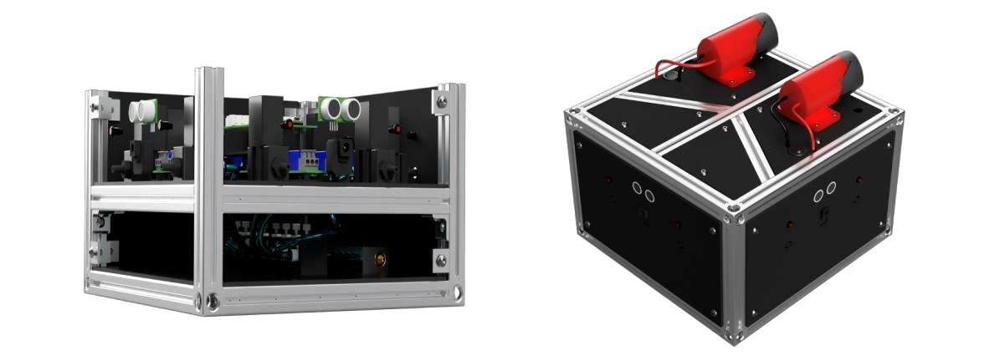

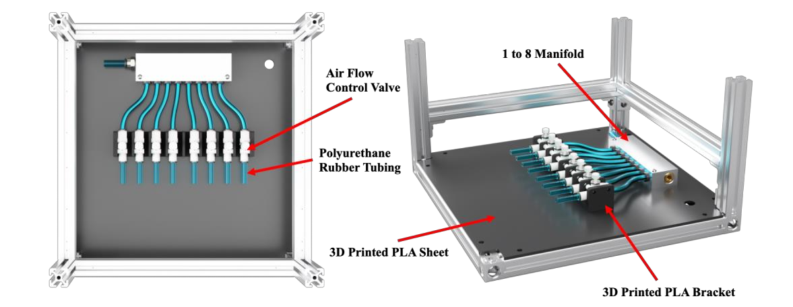

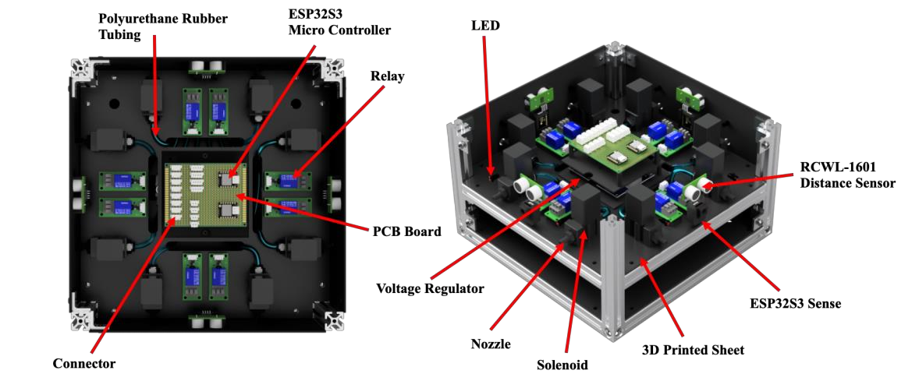
Air supply and low-friction support
An onboard compressed-air cylinder supplies both the thrusters and the bearings, allowing the platform to move without a supply hose tether. A printed bracket on an aluminum plate holds the cylinder, regulators, filter, and shutoff hardware.
The pneumatic system uses separate regulated branches: approximately 60 psi for bearing support and 40 psi for thrust. This lets me adjust actuation pressure independently of the pressure keeping the platform off the floor. Each branch can also be isolated during testing.
Underneath, a triangular 4 mm aluminum plate carries three 40 mm air bearings. Radial adjustment grooves at 120° intervals allow the support points to be repositioned. After load balancing, the three measured support loads were 7.614, 7.752, and 7.724 kg—close to an even three-way distribution.

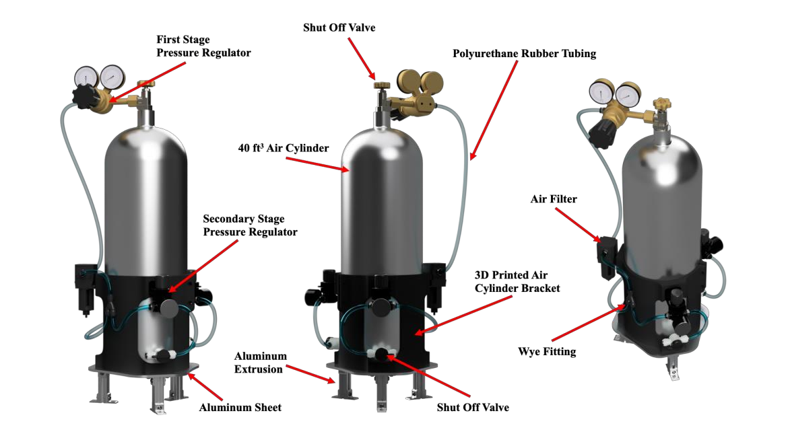

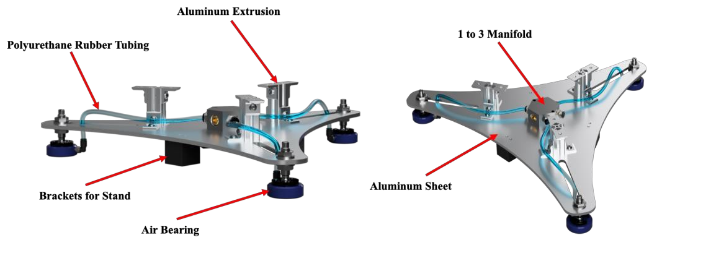

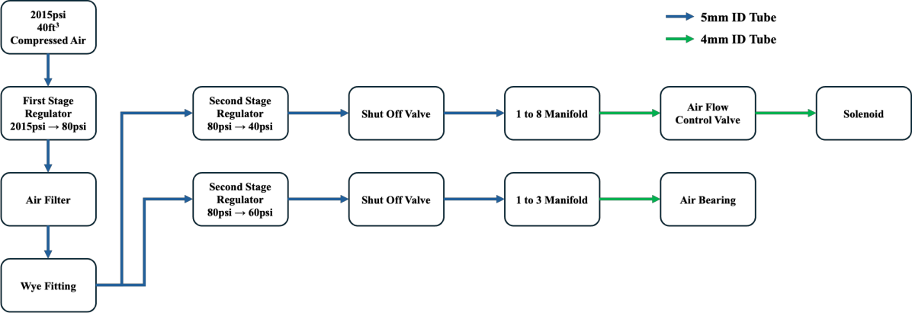

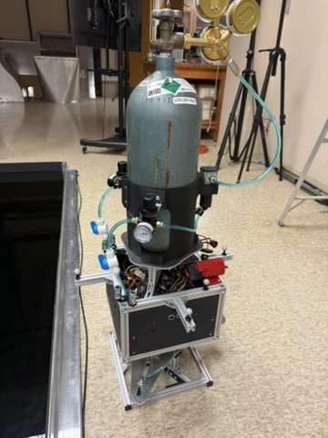
Custom thrust bench and testing
The custom thrust bench measured each thruster in its installed configuration, retaining the actual tubing and regulator. A load cell, HX711 amplifier, and ESP32-S3 recorded repeated firings, capturing the output of the complete pneumatic system.
I temporarily routed each valve’s output through a free-hanging silicone tube to an equivalent nozzle on the load cell. The loose loop reduced mechanical preload on the sensor. Before testing, I tared the load cell, calibrated it with a known mass, and checked it with additional reference masses.
Each valve was fired for five seconds per activation, in two sets of 25 activations. Force data was recorded wirelessly to CSV so I could compare average thrust and repeatability across the eight valves.
Measured forces ranged from 0.428 to 0.484 N. Treating the thrusters as identical would give the controller an inaccurate picture of the forces and torques available. I incorporated the individual measurements into both the controller and the simulation, alongside the platform’s mass, inertia, and center-of-mass offset.

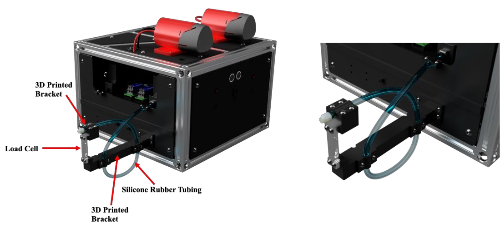
| Thruster | Mean force (N) | Repeatability CV (%) |
|---|---|---|
| T1 | 0.441 | 0.43 |
| T2 | 0.431 | 0.32 |
| T3 | 0.428 | 0.73 |
| T4 | 0.438 | 0.31 |
| T5 | 0.469 | 0.40 |
| T6 | 0.447 | 0.21 |
| T7 | 0.467 | 0.43 |
| T8 | 0.484 | 0.30 |
Thesis Table 1. CV is the coefficient of variation: a measure of variation relative to the mean. Each thruster’s repeatability CV was below 1%, even though the strongest valve produced about 13% more thrust than the weakest.
Electronics, sensing, and communication
The platform separates valve power from the electronics supply using two 12 V battery packs. One supplies actuation; the other feeds the converters for the controllers, relays, and auxiliary sensors. This separation reduces interference from valve switching on the electronics supply.
Seven OptiTrack Prime 13 cameras surround the 6 × 6 m test area. They track an asymmetric pattern of reflective markers so the platform can be identified through changes in heading. Motive reconstructs the pose and streams it over Ethernet using NatNet.
The ground station extracts x–y position, yaw, and the corresponding velocities for feedback. Side-panel cameras and ultrasonic sensors were integrated for further development; the thesis experiment used motion capture for closed-loop control.

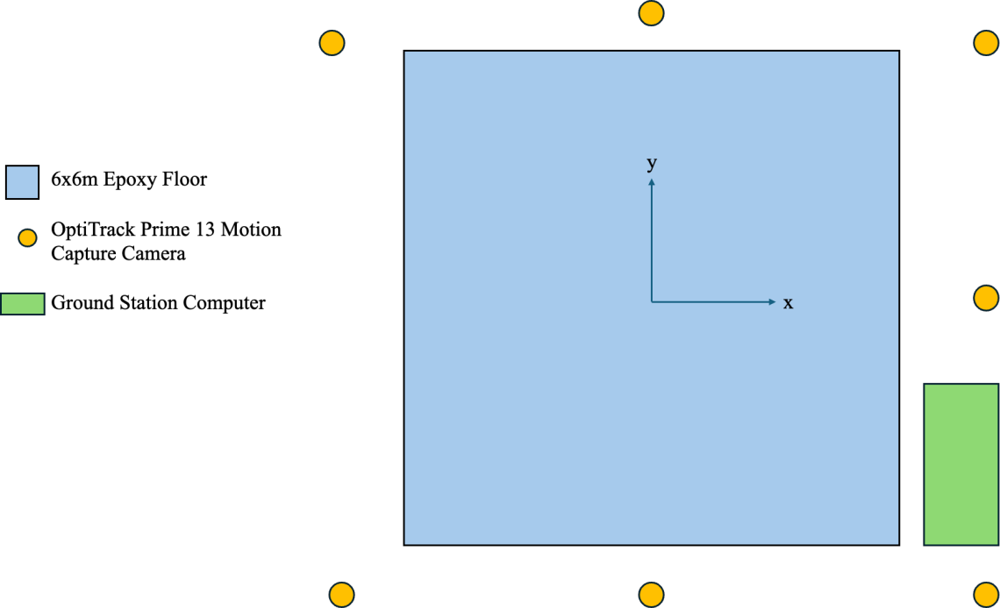

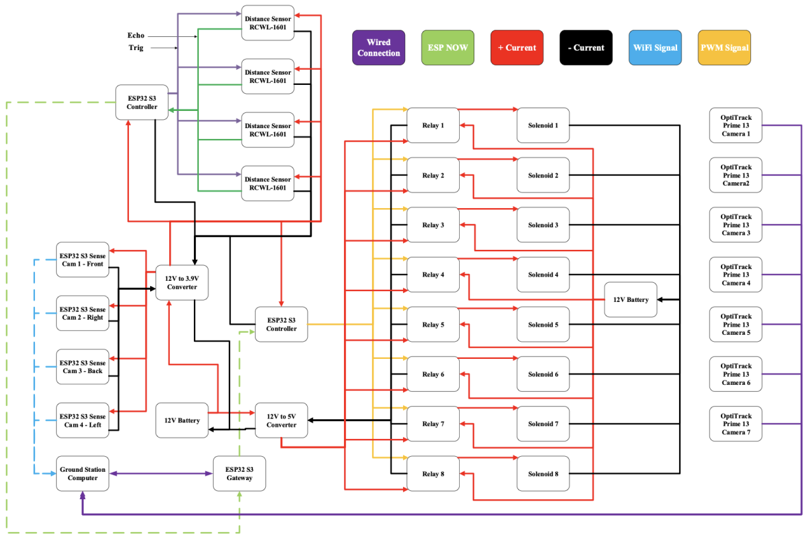

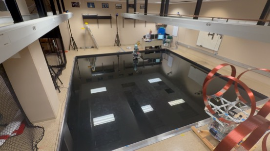
Building the digital twin
The simulation represents six planar states: x and y position, two translational velocities, heading, and angular velocity. It sums the forces from active thrusters, rotates those forces from the body frame into the world frame, and computes yaw torque using each thruster’s lever arm about the center of mass.
The measured model uses a mass of 23.090 kg, a planar moment of inertia of 0.324 kg·m², and a center-of-mass offset of (5.56, 0.78) mm from the geometric center. Including that offset matters because the same firing combination can produce both translation and rotation.
A central configuration layer supplies physical parameters and controller settings to both environments. Mission generation, MPC, data logging, and plotting follow the same workflow, with the feedback source changing between the simulated dynamics and motion capture.
Idealized physics
Instantaneous thrust, perfect sensing, and no drag or external disturbances provide a baseline for checking the controller, thruster mapping, and coordinate transforms.
Realistic physics
Linear and rotational drag, measurement noise, valve response, command delay, and small disturbances represent effects encountered on the physical testbed.
Model predictive control
MPC predicts how the platform will move, chooses a sequence of thruster commands, applies the first command, and plans again from the next measurement. The optimization balances tracking error and actuation effort while respecting binary thruster decisions and motion constraints.
Gurobi solves the mixed-integer problem on a ground-station computer, and the onboard ESP32 executes the selected commands. The prediction horizon covers 0.9 seconds, or 15 control steps.
A separate 12-step control horizon defines the sequence of binary firing decisions. The objective weighs position, heading, velocity, and actuation effort; state bounds constrain the predicted motion to the test area and configured motion limits. Heading targets are wrapped into the appropriate neighborhood of the current angle to avoid unnecessary full rotations.
The hardware feedback loop
- 01
Measure
OptiTrack streams pose data at 240 Hz. The ground station extracts planar position, heading, and velocities.
- 02
Predict & choose
The MPC uses the latest state and reference path to select an eight-bit thruster command.
- 03
Transmit & fire
An ESP-NOW link delivers the command to the onboard ESP32, which switches the valve relays.
- 04
Measure again
The platform moves, motion capture supplies the next state, and the controller replans.
In simulation, the dynamics model supplies the state feedback. The same controller, mission logic, horizons, and tuning are used in both environments.
Reusing the optimization model
The solver model is created once. Each cycle updates the measured state, local dynamics, reference, and weights. Shifting the previous solution forward supplies a warm start for the next optimization.
Working within a control period
A 50 ms solver budget leaves room inside the 60 ms update period. The configuration prioritizes feasible solutions and uses a 1% optimality gap. A proportional fallback is available if no feasible solution is found; the thesis reports no fallback activation during hardware testing.
Experimental validation
The validation mission follows a path generated from a DXF outline. It combines straight segments, curved arcs, and sharp corners, with a 0.50 m standoff and a commanded speed of 0.07 m/s. The physical run lasted 196.16 seconds.
The 12.4 m path tests several behaviors in one mission: approaching the profile, maintaining motion through curves, reorienting at corners, and braking into a final position and heading. At each control cycle I recorded pose, velocity, thruster commands, and solver timing.
After collecting hardware data, I adjusted the simulation’s environmental parameters, such as drag and disturbances, to better reproduce the measured behavior. The controller settings and measured physical parameters stayed fixed. The comparison therefore evaluates a calibrated digital twin of this experiment.

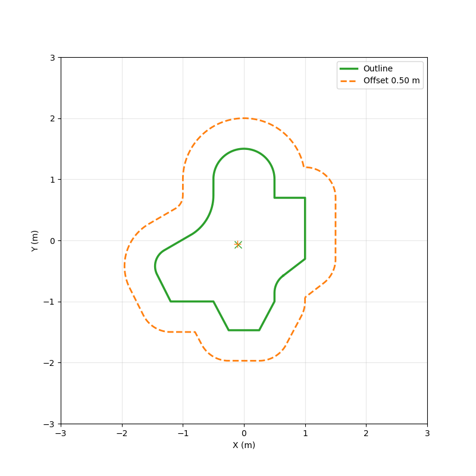

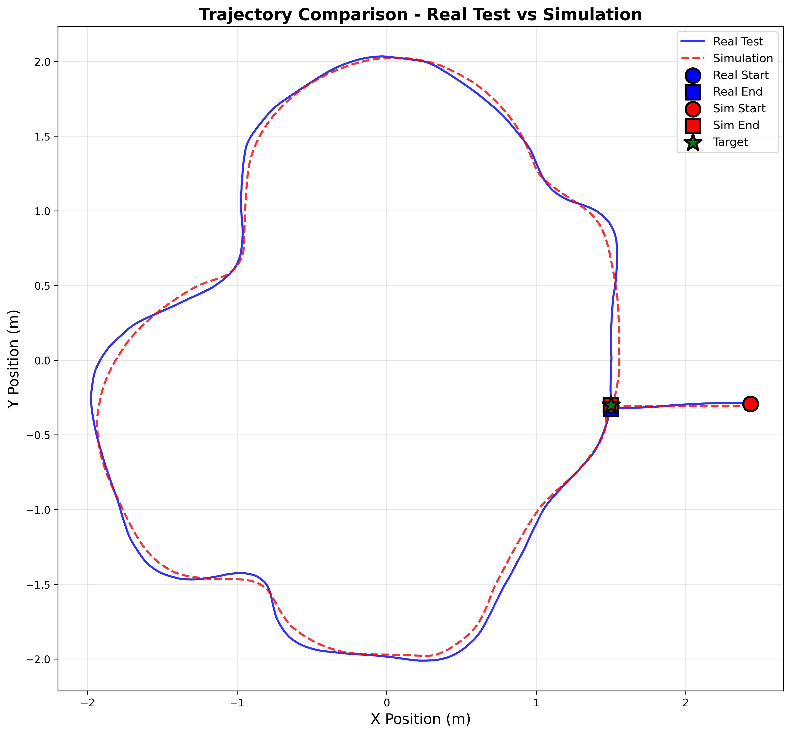
| Metric | Hardware | Simulation |
|---|---|---|
| Mean position error (m) | 0.1791 | 0.2167 |
| Final position error (m) | 0.0241 | 0.0013 |
| Final heading error (°) | 0.51 | 0.18 |
| Total thruster-on time (s) | 188.04 | 190.80 |
| Mean solver time (ms) | 4.61 | 5.64 |
| Maximum solver time (ms) | 32.10 | 24.25 |
Source: thesis Table 4 and the recorded comparison dataset. The headline 2.4 cm value is the rounded final position error. Download the comparison metrics (CSV).
Tracking and final settling
The trajectory overlay shows where the platform traveled; the time histories show how it behaved along the way. Position error rises and falls as the reference progresses through the profile, then decreases as the vehicle settles at the final target.
The hardware’s mean position error was 0.1791 m, compared with 0.2167 m in simulation. The model reproduced the broad response but did not match every transient. Its final position error was also smaller than the hardware’s, which is why the final 2.4 cm result and the full-run tracking error are reported separately.

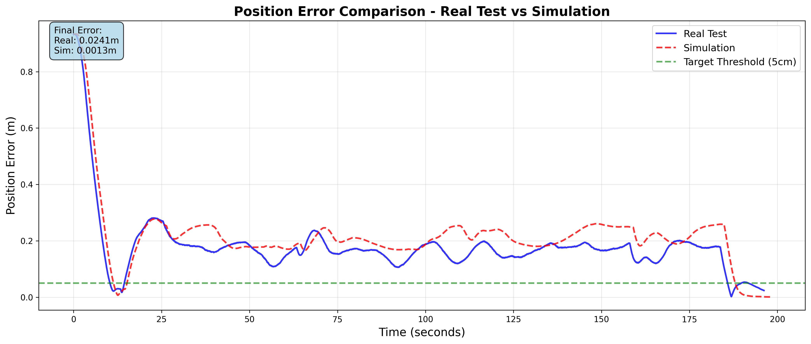

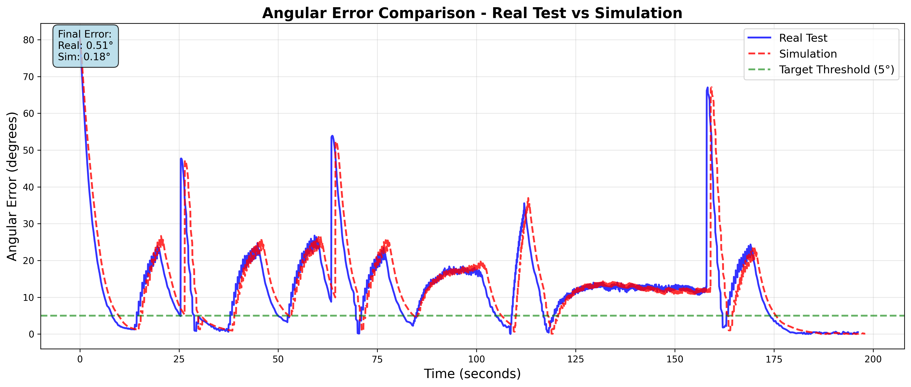
Velocity and actuation effort
The platform accelerates to join the path, tracks near the commanded speed, and slows at the end. Mean speed was 0.0630 m/s on hardware and 0.0642 m/s in simulation. The physical speed trace is noisier because velocity is derived from measured positions, while the simulator provides velocity directly from its state.
The two runs use the individual thrusters differently. For example, T6 accumulated 17.22 s on hardware and 53.64 s in simulation. Different binary firing combinations can create similar net forces and torques, so small differences in state and optimization can change which valves are selected.
Summing all eight valves gives 188.04 s of hardware firing time and 190.80 s in simulation—a 1.47% difference in total on-time. This is an actuation-effort comparison and a proxy for air consumption, rather than a direct measurement of propellant mass.

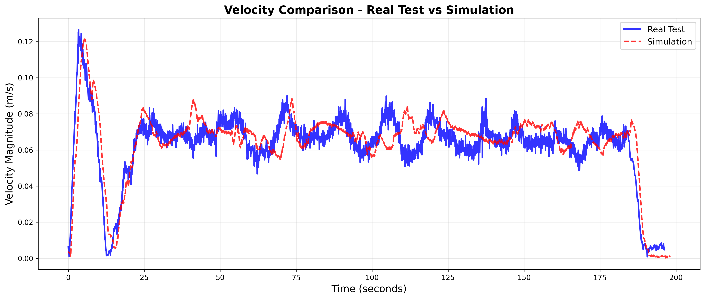

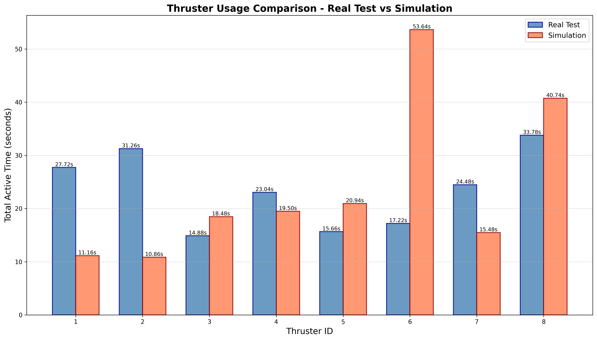
Measured solver performance
Real-time feasibility was checked over the recorded mission, including the final approach where solves became more demanding. The hardware run averaged 4.61 ms per solve and reached a maximum of 32.10 ms. The simulation averaged 5.64 ms with a 24.25 ms maximum.
Every recorded solve in both runs stayed below the 60 ms control period. These measurements describe optimization time on the ground station; sensing, communication, and valve response are separate parts of the feedback loop.

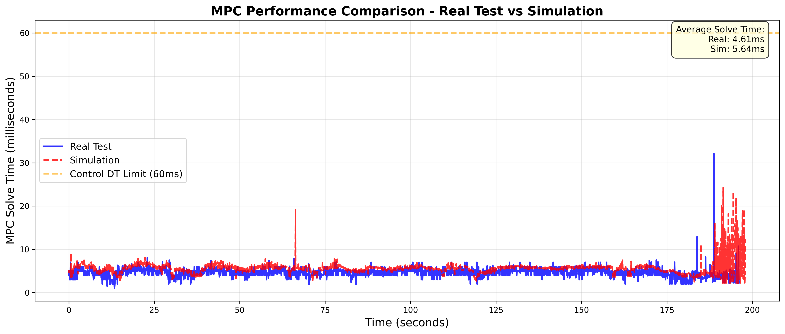
Real-time control
The longest recorded hardware solve was 32.10 ms, within the 60 ms control period. The mean was 4.61 ms over this mission.
Comparable total effort
Total thruster-on time differed by 1.47%. Individual thruster usage differed more; on-time serves as a proxy for propellant use.
Settling vs. tracking
The platform finished 2.4 cm from its target. Its mean position error during the run was 17.9 cm, which gives a separate measure of tracking performance.
Engineering outcomes
A central contribution was the custom measurement hardware used to diagnose and resolve differences between the digital twin and the physical system. Characterizing the individual thrusters gave both the controller and simulation a measured basis for their actuator models.
The completed platform also demonstrated real-time mixed-integer MPC with binary thrusters on a ground station, and a calibrated simulation that reproduced key features of the hardware experiment.
The validation covers planar motion and the documented mission. Extending the system to free-space, six-degree-of-freedom motion introduces additional dynamics and constraints—work I explore in my 3D satellite-control project.
Documentation
This page focuses on the 2025 thesis and its hardware experiment. The codebase continues to develop beyond that research baseline.